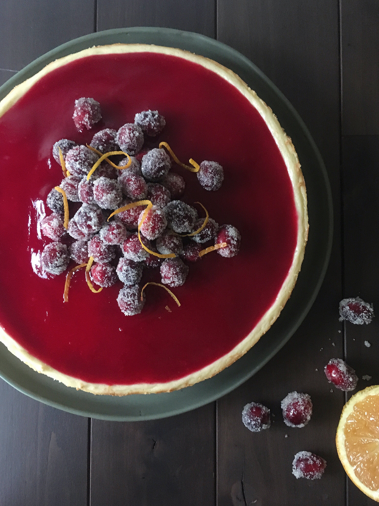

Cranberry Cheesecake

Description
Cranberries and orange are a natural pairing, and I wanted to combine them in a cheesecake fit for the Thanksgiving table. The cranberry glaze is a really beautiful color, and the sugared cranberries are the perfect topping. Most of the work is done the night before, so it's not even that hard to make.
Ingredients
- 10 digestive biscuits (such as McVitie's®)
- 5 tablespoons butter, melted
- 2 tablespoons confectioners' sugar
- ⅛ teaspoon salt
- 2 (8 ounce) packages cream cheese, softened
- ¾ cup white sugar
- 3 large eggs
- ¼ cup sour cream
- 2 teaspoons vanilla extract
- 1 orange, zested
Steps
- Preheat the oven to 375 degrees F (190 degrees C). Grease the sides of a 9-inch springform pan. Line the bottom with a circle of parchment paper.
- biscuits into crumbs using a food processor. Stir crumbs, butter, confectioners' sugar, and salt together to make the crust. Press into the bottom of the pan. Rinse food processor and set aside for the cranberry glaze.
- Bake crust in the preheated oven until firm, 8 to 10 minutes. Remove the crust from the oven and reduce the temperature to 325 degrees F (165 degrees C). Let crust cool while making the filling.
- Beat cream cheese and sugar together until smooth. Add eggs, sour cream, vanilla, and orange zest. Mix until well combined, stopping to scrape the sides and bottom of the bowl. Spoon batter over the crust.
- Bake until the filling is set but still soft in the center, 30 to 40 minutes. Cool cheesecake to room temperature, about 30 minutes.
- While the cheesecake is cooling, combine 1/3 cup sugar and water in a small saucepan. Bring to a simmer over medium-low heat and stir until sugar is dissolved. Pour into a bowl and cool for 10 minutes. Add cranberries and stir to coat with syrup.
- Refrigerate cheesecake and syrup-coated cranberries, 8 hours to overnight.
- Line a rimmed baking sheet with parchment paper. Place 1/4 cup granulated sugar in a shallow bowl. Drain the syrup-coated cranberries, then roll them in the sugar. Place the sugared cranberries on the prepared baking sheet and allow to dry, 30 minutes to 1 hour.
- In the meantime, make the glaze. Combine cranberries, water, and sugar in a small saucepan. Simmer, crushing cranberries, until jammy, about 8 minutes. Let cool slightly. Transfer to the food processor; add confectioners' sugar, orange juice, corn syrup, vanilla, and salt. Process until smooth.
- Strain cranberry glaze through a fine-mesh sieve and discard solids. Pour over the cheesecake and smooth across the top with a small offset spatula. Garnish with sugared cranberries.